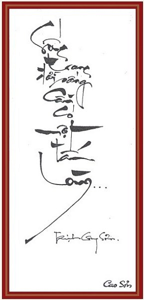

Hình như ai cũng có thể tìm thấy mình trong bài hát của Trịnh Công Sơn - tôi nhớ lại một lời nhận xét đầy thân ái và gần gũi của một nhạc sĩ khi nói về Trịnh Công Sơn. Và xin mượn lời nhận xét đó để làm căn cứ cho bài viết của mình. Cách đây hơn hai mươi năm, tôi đã đến với nhạc Trịnh Công Sơn một cách hết sức vô tình và bột phát với những lời ca dễ thương như thế này: "Cây có cành bầy chim làm tổ. Sông có nguồn từ suối chảy ra. Tim mỗi người là căn nhà nhỏ. Tình nồng thắm như mặt trời xa...". Lời ca đã khiến cho tuổi thơ tôi bay lên trong những giấc mơ hồng êm ái, dịu ngọt và... điều quan trọng là trong giấc mơ đó không còn tiếng bom. Thời đó, bài hát Em sẽ và mùa xuân của mẹ lập tức được người nghe đón nhận hết sức nồng nhiệt và nhanh chóng được lan truyền rộng rãi trong cộng đồng. Bên cạnh những bài hát như Em đi đưa cơm cho mẹ đi cày hay Thiếu nhi thế giới vui liên hoan... vang đầy hơi thở và hào khí của một thế hệ thiếu nhi Việt Nam trong những tháng năm đạn bom ác liệt, thể hiện một ý thức trách nhiệm và ý thức công dân của những chủ nhân “nhí" trong hoàn cảnh khó khăn của đất nước. Em sẽ là mùa xuân của Trịnh Công Sơn đã đưa các em trở về với bản ngã tuổi thơ, Trẻ em như búp trên cành... Mềm mại như mùa xuân hạnh phúc của mẹ, ca khúc viết cho thiếu nhi thời ấy của Trịnh Công Sơn như mở ra một trang mới, dự báo một chân trời hạnh phúc của cả dân tộc. Hai mươi năm đã qua đi, các em nhỏ Việt Nam vẫn tiếp tục yêu thích ca khúc đó, và tôi cũng thế.
Càng ngày tình yêu của tôi đối với nhũng ca khúc Trịnh Công Sơn càng trở nên ám ảnh, không sao dứt được. Cũng như bao thiếu nữ khác tôi hát nhạc Trịnh Công Sơn, những tình khúc buồn của tuổi mười tám rất giàu xúc cảm: "Ngoài hiên mưa rơi rơi, lòng ai như chơi vơi, Người ơi hoen ướt mi ai rồi”... Buồn! Nhạc của Trịnh Công Sơn là vậy. Những trái tim nào biết yêu mà chẳng biết buồn. .. và lúc buồn thì anh sẽ làm bạn tâm tình rất đỗi dịu dàng. Trịnh Công Sơn có một tình yêu thật sâu sắc và bao dung, như thể tâm hồn anh đã được “thiền" nên trải lòng yêu thương vô bờ bến tới mọi thân phận. Anh hiểu đến tận cùng giá trị thực của một kiếp sống trước cái vô tận của vũ trụ nên lòng anh độ lượng như thế này: “Yêu em phụ rẫy trong ta, yêu em yêu thêm tình phụ, yêu em lòng chợt từ bi bất ngờ...". Yêu em cả khi em phụ bạc để rồi cảm thấy trái tim từ bi độ lượng. .. Có lẽ chính cái tinh thần cao thượng nhân ái đến mức có vẻ như thủ tiêu đấu tranh trong anh, làm cho những ca khúc của anh mang màu sắc Phật giáo, giai điệu đều đều, trầm buồn như kinh cầu mà rất đọng trong lòng người nghe.
Có rất nhiều bài báo viết về anh, một Trịnh Công Sơn- với những bài hát mang đầy ý thức trách nhiệm công dân như Nối vòng tay lớn, Hãy đi cùng nhau, Đại bác ru đêm... Rồi sau này là Huyền thoại Mẹ, Hà Nội mùa thu... Phản chiến, ngợi ca hoà bình, ngợi ca quê hương đất nước bằng những ca khúc đã trở nên quá phổ biến và lừng danh trong cả nước có lẽ cũng không nhiều nhạc sĩ làm được điều này.
Người ta nói đến Trịnh Công Sơn như là một nghệ sĩ của tình yêu, bởi lẽ đa phần ca khúc của anh đều ngợi ca, hoặc đau đớn, ngậm ngùi về một mối tình nào đó: “Chiều nay còn mưa, sao em không lại, nhớ mãi trong cơn đau vùi, làm sao có nhau..." (Diễm xưa). Có người còn bảo: “Thích hát nhạc TCS vì nhạc anh cô liêu”... Cũng như số đông, tôi yêu những bài hát của Trịnh Công Sơn. Yêu đến ám ảnh tâm hồn tôi, nhưng không thể cắt nghĩa. Anh mở lối cho ta đi vào đường đời muôn nẻo: “Em đi về chiều mưa ướt áo, đường phượng bay mù không lối vào"... Hay như "Gió heo may đã về, chiều tím loang vỉa hè, và gió hôn tóc thề...". Trong những bài hát này của anh, có ai đó nhận xét: “Nó không có chính trị”. Cũng phải thôi, có những lúc mỗi chúng ta tạm tách khỏi cộng đồng để tự đối diện với chính mình: buồn vui riêng mình... Và lúc đó những ca khúc của TCS thầm thì bên tai. Chẳng thế, mà anh có rất nhiều bài ru: Ru ta ngậm ngùi, Tôi ru em ngủ, Ru tình . Ru em từng ngón xuân nồng. Ở một ca khúc ru, anh đã viết những ca từ như thế này: “Ru em đầu con gió, em hong tóc ven hồ. Khi sen hồng mới nở, nhụy đời ôi thơm quá...” Tình yêu thương đối với con người của anh mới cao quý làm sao, anh nâng niu và ngợi ca cái đẹp nguyên sơ của người con gái “Nhụy đời ôi thơm quá". Còn sự tôn vinh con người nào cao hơn thế! Tuy nhiên TCS cũng rất thẳng thắn, thức tỉnh chúng ta phải đối mặt trước những nỗi đau đời - nỗi đau nhân loại bất kể thời đại nào: “Một lần nằm mơ, tôi thấy tôi qua đời" (Bên đời hiu quạnh), hay “Đôi khi thấy trăm vết thương. Rồi như đá ngây ngô..." Tôi bị ám ảnh bởi ca khúc Trịnh Công Sơn, vì ở đó chứa đầy vẻ liêu trai, phiêu diêu đến độ có người bảo: “Lời ca của TCS cứ lẩn thẩn, vẩn vơ thế nào ấy“. Nhưng thực ra, anh gửi gắm trong những lời ca tưởng dễ dãi như đồng dao con trẻ là cả một triết lý về con người: “Người ta là hoa của đất”, “Sống gửi, thác về...”, bộc lộ rõ trong nhiều ca khúc như Chiếc lá thu phai, Biết đâu nguồn cội, Ở trọ, Một cõi đi về... Dễ hiểu và khó hiểu, bởi âm nhạc của Trịnh Công Sơn là kết hợp của những thanh âm đã siêu thoát làm lay động nơi sáng láng nhất của sự giác ngộ con người như tiếng kinh cầu, đồng thời âm nhạc của anh lại là những giai điệu mộc mạc đơn giản như lời ru, như đồng dao ...
Những giai điệu nguyên sơ của cuộc sống con người. Nhiều lúc tôi cứ ray rứt: Chắc Trịnh Công Sơn phải khổ lắm, phải đọa đày lắm để đi hết các nẻo buồn vui con người, để chia sẻ những sướng khổ với nhân quần, an ủi động viên con người vượt qua nỗi đau. với triết lý “nỗi đau đời là tất yếu”, là từ khi “Mẹ cho mang nặng kiếp làm người” (Gọi tên bốn mùa) nên hãy thanh thản đón nhận "Dù thật lệ rơi, lòng không buồn mấy...” (Bên đời hiu quạnh). Để rồi ta sẽ sống nhân ái hơn, có ích hơn: “Sống trong đời sống cần có một tấm lòng, để làm gì em biết không?”. Kết cục lại là thế: Một tấm lòng dẫu chỉ để gió cuốn đi...
Anh là kẻ ham chơi lãng tử quên mệt mỏi trong cuộc sống “Hãy cứ vui chơi cuộc đời,đừng cuồng điên mơ trăm năm sau..." và anh còn là người khổ hạnh san sẽ nỗi đau với nhân quần, để tâm hồn chúng ta được thanh thoát.
Nghe Trịnh Công Sơn không dễ. Phải là khi gạt bỏ được mọi sự xô bồ ra bên ngoài khung cửa. Phải là khi đừng quá vui. Chỉ ta với âm nhạc của anh thôi đối diện. Khi buồn, thì lời ca trong Kinh khổ của anh sẽ làm cho ta được an ủi. Khi vui thì lời ca của anh sẽ giúp ta đừng thái quá, âu đó cũng là cái đạo của người nghệ sĩ đích thực - dìu dắt tâm hồn ta đi trọn cuộc đời với những nỗi buồn vui.